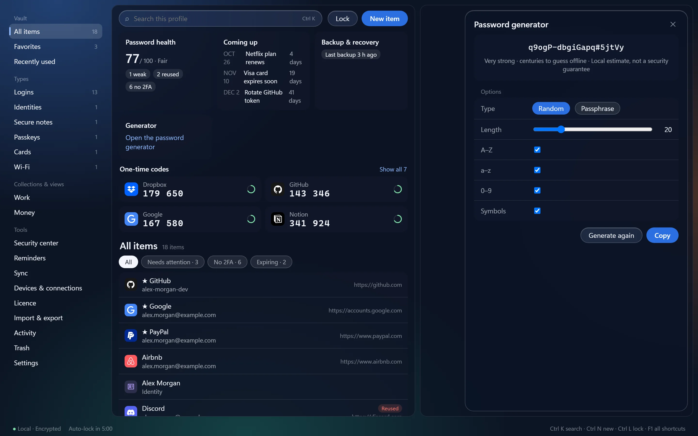

할 수 있는 모든 것, 그리고 그것이 이루어지는 곳
이 모든 것이 내 기기에서 실행됩니다. Free는 항목을 4개까지 담을 수 있으며, Pro는 제한을 없애고 동기화, 2단계 인증 코드, 문서를 더합니다.

보관함
- 디스크에서 암호화됨
- 저장하는 모든 것은 마스터 비밀번호로 보호되는 키로 암호화되며, Argon2id와 AES-256-GCM을 사용합니다. 비밀번호뿐 아니라 이름, 사용자 이름, 웹사이트도 암호화됩니다.
- 비밀번호 이상의 것
- 웹사이트 및 데스크톱 앱 로그인, 패스키, 결제 카드, 은행 계좌, 신원 정보, 보안 메모, 문서, SSH 키, API 키, Wi-Fi 네트워크, 북마크, 소프트웨어 라이선스, 구독, 보증, 구매 내역을 각각 고유한 필드로 저장합니다.
- 문서 (Pro)
- 스캔한 문서 같은 파일을 파일당 최대 25MB까지 보관함에 보관하세요. 각 파일은 고유한 키로 암호화됩니다. 문서를 미리 보거나, 사본을 저장하거나, 다른 앱에서 열 수 있습니다.
- 2단계 인증 코드 (Pro)
- 사이트의 설정 키를 저장하면 LocalGateKeys가 로그인 상단과 홈 페이지의 일회용 코드 카드에 현재 코드를 표시합니다. 코드는 TOTP 표준(RFC 6238)을 따릅니다: 6~8자리, 15~120초, SHA-1, SHA-256 또는 SHA-512.
- QR 코드로 코드 추가
- 사이트의 2단계 인증 설정 페이지에서 Win+Shift+S로 QR 코드를 캡처해 붙여 넣거나 웹캠에 비추세요. Google Authenticator 내보내기 QR 코드도 사용할 수 있습니다. 이미지는 PC에서 읽으며 저장되지 않습니다.
- 비밀번호 생성기
- 8~256자의 무작위 비밀번호 또는 3~16단어의 암호 문구를 만듭니다.
- 비밀번호 상태
- 저장된 비밀번호 중 어떤 것이 취약하거나, 재사용되었거나, 1년이 넘었거나, 2단계 인증 코드가 없는지 확인하세요. Have I Been Pwned를 이용한 유출 확인은 켜기 전까지 꺼져 있고, 직접 시작할 때만 실행되며, 해시의 다섯 글자만 전송하고 비밀번호는 절대 보내지 않습니다.
- 사이트 로고와 종류 아이콘
- 각 항목에는 사이트의 아이콘, 잘 알려진 사이트의 내장 로고 또는 항목 종류를 나타내는 아이콘이 표시되어 한눈에 알아볼 수 있습니다.
- 검색과 컬렉션
- 명령 팔레트(Ctrl+K), 필터 칩, 즐겨찾기, 직접 만든 컬렉션으로 항목을 찾으세요. 화살표 키, Enter, Ctrl+C는 검색 상자에서 바로 항목 목록에서 작동합니다.
- 휴지통과 실행 취소
- 삭제한 항목은 휴지통으로 이동하며, 이를 알리는 메시지에 실행 취소 버튼이 있습니다. 휴지통은 30일 후 자동으로 비워지거나, 직접 비울 때까지 모두 보관됩니다.
- 비밀번호 기록
- 로그인의 비밀번호가 바뀌면 이전 비밀번호 최근 5개가 암호화된 기록에 보관됩니다.



가져오기와 내보내기
- 다른 비밀번호 관리자에서 가져오기
- 1Password, Bitwarden, LastPass, Dashlane, Proton Pass, KeePass와 KeePassXC(
.kdbx파일 포함), Chrome, Edge, Brave, Firefox, Safari의 내보내기 파일 또는 다른 CSV 파일을 가져올 수 있습니다. 무언가가 기록되기 전에 모든 항목을 직접 검토하며, 가져오기는 온라인에 연결되지 않습니다. - 내보내기
- 암호화된 KeePass KDBX 4 파일, Bitwarden 호환 CSV 또는 JSON, KeePass XML로 내보냅니다. 모든 내보내기는 먼저 마스터 비밀번호를 요구합니다.
로그인 채우기
- Chrome 및 Edge 확장 프로그램
- 웹사이트에서 로그인을 채우고 저장하며, 사용자 이름과 비밀번호를 별도의 페이지에서 묻는 로그인도 지원합니다. 확장 프로그램은 로컬 도우미를 통해 PC의 앱에 정확히 같은 사이트와 일치하는 로그인을 요청합니다. 2단계 인증 코드, 주소, 결제 카드도 채워 줍니다.
- 직접 제어하는 저장 프롬프트
- 로그인한 후 확장 프로그램이 새 로그인을 저장하거나 바뀐 비밀번호를 업데이트하도록 제안합니다. 도구 모음 버튼에서 사이트별로 이 프롬프트를 끌 수 있습니다.
- 채우기는 항상 직접 시작합니다
- 계정을 선택하기 전에는 아무것도 채워지지 않습니다. 설정에서 "채운 후 로그인"을 켜지 않는 한 양식이 대신 제출되지 않으며, 켜더라도 직접 시작한 채우기 이후에만 제출됩니다.
- 패스키
- Chrome 또는 Edge에서 웹사이트가 패스키를 제안하면 LocalGateKeys가 이를 보관함에 저장하고 그 패스키로 로그인할 수 있습니다. 모든 패스키는 데스크톱 앱에서 Windows Hello 또는 마스터 비밀번호로 직접 승인하며, 브라우저 자체의 패스키 대화 상자도 언제든 한 번의 클릭으로 사용할 수 있습니다. 개인 키는 앱 밖으로 나가지 않습니다.
- Windows 앱 채우기
- 비밀번호 필드 옆의 채우기 버튼 또는 단축키(Ctrl+Shift+Space)로 Windows 프로그램의 로그인 창을 채웁니다. 각 앱은 한 번만 바인딩하며, 그 이후 프로그램, 창 또는 필드가 바뀌었다면 채우기가 거부됩니다.
- 빠른 액세스
- 어디서든 단축키(기본값 Ctrl+Alt+K)로 보관함을 검색하고 복사하세요. Ctrl+Alt+L은 보관함을 즉시 잠급니다.
- 키 입력 기록은 절대 없습니다
- LocalGateKeys는 키보드 후크를 설치하지 않고, 비밀번호를 찾으려고 화면 내용을 읽지 않으며, 다른 프로그램에 아무것도 주입하지 않습니다. 앱이 올바른 로그인 필드를 제공하지 않으면 채워지지 않습니다.

잠금 해제
- 마스터 비밀번호
- 12자 이상이며 디스크에 기록되지 않습니다. 보관함을 여는 유일한 수단이며 저희는 이를 재설정해 드릴 수 없습니다.
- Windows Hello
- LocalGateKeys에서 설정한 후 Windows Hello를 통해 지문, 얼굴 또는 PIN으로 잠금을 해제합니다.
- 카메라 확인
- Windows Hello가 없는 PC를 위한 선택적 웹캠 얼굴 확인입니다. 편의 기능이며 인증된 스푸핑 방지 기능이 아니므로 가능하면 Windows Hello를 사용하세요.
- 복구 문구
- 마스터 비밀번호를 잊었을 때 보관함을 열 수 있는 선택적 24단어 문구입니다. 한 번만 표시되며 앱에는 저장되지 않습니다.
- 자동 잠금 및 클립보드 지우기
- 보관함은 선택한 시간이 지나면 잠기며, 복사한 비밀번호는 클립보드에서 지워집니다. LocalGateKeys가 복사한 것만 지워집니다.
백업
- 예약된 암호화 백업
- 설정한 시간에 매일 또는 매주 실행됩니다. 각 백업은 첨부 파일을 포함한 전체 암호화 파일이며, 기록한 후 검증합니다.
- 선택한 폴더에 추가 사본
- 각 백업을 OneDrive, Google Drive, Dropbox, Proton Drive 폴더 또는 원하는 다른 위치에 복사하도록 설정하세요. 암호화된 백업 파일만 복사되며 실제 보관함은 복사되지 않습니다.
- 암호화된 전송 패키지
- 선택한 항목을 자체 비밀번호로 보호되는 암호화 파일로 다른 보관함에 옮깁니다.
기기 간 동기화 (Pro)
- 집 Wi-Fi로
- 일회용 QR 코드로 PC를 한 번 페어링합니다(PC 간에는 그 텍스트를 붙여 넣습니다). 두 PC가 같은 네트워크에서 잠금 해제되어 있으면 인증되고 암호화된 연결로 변경 사항을 직접 주고받습니다. 인터넷을 거치지 않습니다.
- 내 클라우드 폴더로
- PC가 같은 네트워크에 거의 연결되지 않는다면, 이미 사용 중인 OneDrive, Dropbox, Google Drive 또는 iCloud Drive 폴더를 통해 동기화 비밀번호로 보호하며 동기화할 수 있습니다. 제공업체에는 암호화된 파일만 저장됩니다. 두 방식을 함께 사용할 수 있습니다.
- 동기화되는 항목
- 웹사이트 및 데스크톱 앱 로그인과 메모, 북마크 같은 기타 항목. 컬렉션, 문서, 첨부 파일은 아직 동기화되지 않습니다. PC 두 대에서 동시에 편집하면 두 버전이 모두 유지되며, 삭제하면 다른 PC에서는 해당 항목이 휴지통으로 이동합니다.
- iPhone
- iPhone 앱은 Windows PC와 동기화됩니다. App Store에서 받기.
개인정보 보호
- 계정 없음
- 가입하거나 로그인할 필요가 없습니다. Pro 라이선스는 내가 보관하는 키이며 PC에서 확인됩니다.
- 원격 측정 없음
- 앱은 사용 데이터, 충돌 보고서, 분석 정보를 보내지 않습니다.
- 엄격한 오프라인 모드
- 기본적으로 켜져 있습니다. 백그라운드 인터넷 요청과 유출 확인을 차단하며, 업데이트 확인은 먼저 사용자에게 묻습니다.
- 웹사이트 아이콘, 내가 선택
- 사이트의 아이콘을 표시하기 위해 앱이 해당 사이트에서 아이콘을 다운로드합니다. 이때 사이트는 내가 그곳에 계정이 있다는 사실만 알게 되며 그 밖의 정보는 알지 못합니다. 기본적으로 꺼져 있으며, 설정에서 "웹사이트 아이콘 표시"를 켜세요(엄격한 오프라인 모드는 꺼야 합니다).
- 직접 시작하는 업데이트 확인
- 업데이트를 확인하면 서명된 작은 파일 하나를 다운로드합니다. 앱은 스스로 무언가를 다운로드하거나 설치하지 않습니다.